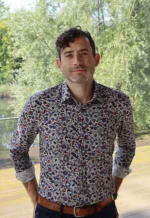

Learning through economics
I teach as a teaching assistant for Master’s-level Game Theory at HHU and co-supervise Master’s theses. Previously, I taught tutorials in Economic Principles and Policy and Interpreting Business Data at Otago.
Behavioral & experimental economics
How we form beliefs.
How we make decisions.
I’m a doctoral researcher at the Düsseldorf Institute for Competition Economics (DICE), Heinrich Heine University Düsseldorf. I study belief formation, judgment, and the incentives that shape our choices.

Questions I’m working on
Work in progress
How do people learn to update their beliefs, and how stable are these patterns over time?
Working papers
Can a brief mindfulness exercise reduce self-serving bias in bargaining?
Work in progress
How do platform incentives shape the news that gets produced?
A little background
Originally from Canada, I spent nearly a decade working in engineering and technology before returning to university to study economics.
I completed my Master of Economics with Distinction at the University of Otago, New Zealand, and joined DICE in 2024. My doctoral research is supervised by Hannah Schildberg-Hörisch.
I combine applied microeconomic and behavioral methods with online, field, and laboratory experiments. I also use AI-assisted interviews and machine learning to explore the reasoning behind people’s decisions.
More about my backgroundBeyond my own research
I teach as a teaching assistant for Master’s-level Game Theory at HHU and co-supervise Master’s theses. Previously, I taught tutorials in Economic Principles and Policy and Interpreting Business Data at Otago.
I coordinate operations at the DICE Laboratory, including experiment deployment, participant management, research support, and coordination with visiting researchers.
DICE LaboratoryContact
For research, teaching, and collaboration.